אריה:
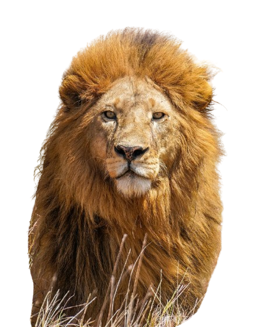 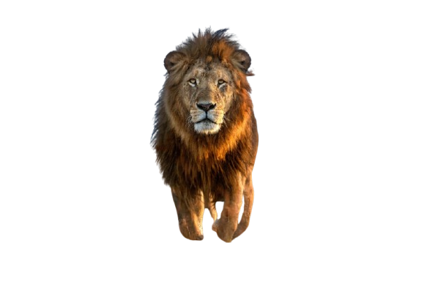 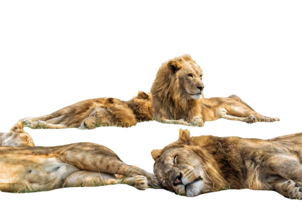
האריה הוא "מלך החיות" — חיה חזקה ובעלת רעמה מרשימה. האריות חיים בלהקות מאורגנות שבהן הם משתפים פעולה בציד ובהגנה על הצאצאים. הם ידועים בעוצמתם ובהקפדה על מבנה חברתי, ולעתים קרובות תפקידים מתחלקים בין חברי הלהקה. הם מתקשרים באמצעים שונים ומציגים דפוסי התנהגות מרתקים בעת חיזור ובניית טריטוריה.
למעבר לעמוד האריה
עמוד ויקיפדיה
נמר:
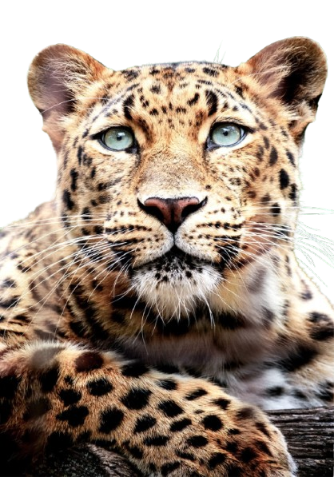 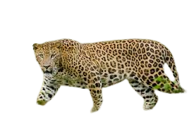 
הנמר מהיר ומסוגל להסתתר בעורו המנומר, מה שעוזר לו להיתפס טרף בלי שנבחין בו. הוא צייד זריז שמעדיף הסוואה ותקיפה פתאומית, ולעתים חי לבד ומסתגל היטב לתנאים שונים. הנמרים מצטיינים ביכולות טיפוס שמאפשרות להם להסתיר טרף מהקרקע ולמנוחה על ענפים. הם גם מסוגלים להסתגל לשינויים בסביבה ולעיתים למצוא דרכים להתרגל לאזורים סמוכים לאדם.
למעבר לעמוד הנמר
עמוד ויקיפדיה
קוף:
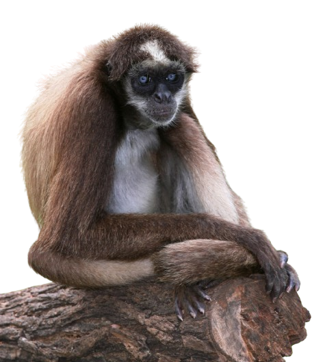 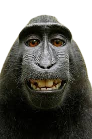 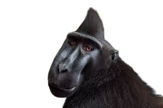
הקוף חכם ושובב, אוהב לטפס ולעשות תעלולים, ומפגין סקרנות כלפי סביבתו. הרבה מינים חיים בקבוצות חברתיות עם תקשורת עשירה באמצעות קולות ותנועות, ולעיתים משתמשים בכלים פשוטים להשגת מזון. הם לומדים מהסביבה ומהאחרים ומשחקים תפקיד חשוב בהרביית הצומח ובהפצת זרעים. בנוסף, לקופים יש כישורי פתרון בעיות מרשימים שניתן לצפות בהם במחקר ובתצפיות בשטח.
למעבר לעמוד הקוף
עמוד ויקיפדיה
פיל:
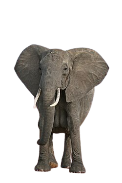 

הפיל גדול ובעל חדק רב-תכליתי המשמש לאכילה, שתייה והזזת חפצים, והוא ידוע בזיכרון ובחושים מפותחים. לפילים מבנה חברתי מורכב הכולל דאגה לצעירים ותקשורת רגשית, והם יכולים להראות סימני אבל ושמחה. בנוסף, פעילותם משנה את הנוף — פריטת עצים ונסיעה בנתיבים יוצרת מקומות מחיה לזנים אחרים. הבנת צרכי הפילים היא חשובה לשימורם ולהבטחת מערכות אקולוגיות בריאות.
למעבר לעמוד הפיל
עמוד ויקיפדיה
ג'ירפה:
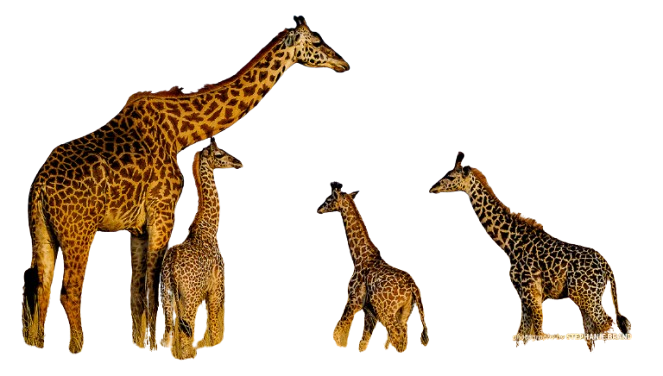 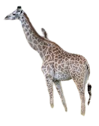 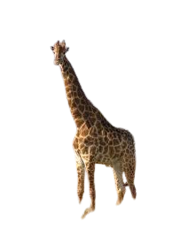
הג'ירפה גבוהה מאוד וצווארה הארוך מאפשר לה להגיע לצמרת העצים ולאכול עלים גבוהים. היא בעלת דפוסי כתמים ייחודיים, נעה לאט אך יכולה להגן על עצמה בעיטות חזקות ומשפיעה על מבנה הצומח בסביבתה. מחקרים מראים שפעילותה מסייעת להפצת זרעים ולהגברת מגוון הצומח בסביבתה.
עמוד ויקיפדיה
למעבר לעמוד הג'ירפה